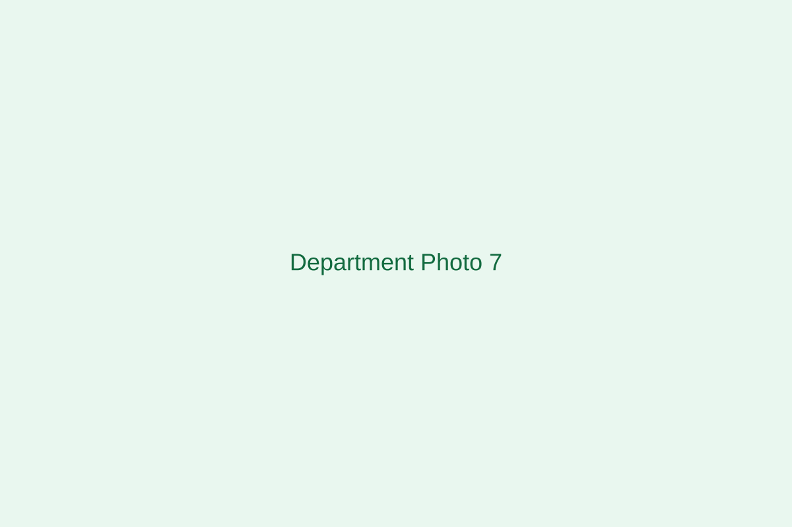

Advancing vision care and clinical expertise.
The Department of Optometry trains students in eye health, clinical assessment, refraction, and patient-centered care for modern healthcare settings.

Explore Our Programmes


Excellence in Teaching and Research
The Department of Optometry provides training in visual science, clinical assessment, refraction, contact lenses, and eye health. Students learn through theory, practical sessions, and clinical experience.
Learn More About Us →What optometry covers
Training includes visual science, refraction, contact lenses, ocular health, and practical clinical work in patient assessment.
Head of Department & Department Leaders
Replace photos and names with the current HOD and department leaders.
Head of Department
Dr. Ifeanyi Odili
Deputy HOD
Dr. Funke Adebayo
Secretary
Mr. John Okafor
Coordinator
Comr. [Name]
Teaching Staff
Gallery of departmental lecturers. Replace with real photos and names.
Dr. [Name]Lecturer
Mr. [Name]Lecturer II
Ms. [Name]Assistant Lecturer
Replace with real optometry student photos
Use real clinical training and classroom images, then update the short notes under each card.
Classroom instruction
Add a line about foundational eye-care learning.
Clinical practical
Briefly describe refraction or diagnostic practice.
Supervised training
Use this for a short write-up on patient-centered training.